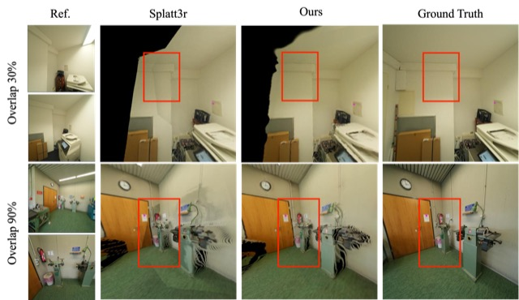

My research interests focus on moving beyond isolated visual subproblems toward integrated models of virtual humans and 3D scenes that can perceive, generate, and reason about interaction in dynamic environments.
Long-term Tracking3D/4D ReconstructionScene DecompositionVideo GenerationAvatar AnimationHuman Scene Interaction
Integrative Direction
Perception-Action World Models
Bridging geometry, generation, tracking, and interaction into a single modeling direction.
Publications
* equal contribution, † corresponding author

CSG-Fusion: Consistent Sparse-View Gaussian Splatting via Matching-based Fusion
Yan Xia*†, Wenbo Ji*, Weirong Chen, Daniel Cremers
Overview
A feed-forward framework that mindfully integrates pixel-aligned pointmap to reduce redundant primitives and produce compact and consistent 3D structures.
LiteTracker: Leveraging Temporal Causality for Accurate Low-latency Tissue Tracking
MICCAI, 2025
Long-term Tracking
Authors
Mert Asim Karaoglu, Wenbo Ji, Ahmed Abbas, Nassir Navab, Benjamin Busam, Alexander Ladikos†
Overview
A low-latency method for tissue online tracking in endoscopic video streams, introducing training-free runtime optimizations on a state-of-the-art long-term point tracking method.
RE0: Recognize Everything with 3D Zero-shot Instance Segmentation
ICRA, 2025
Scene Decomposition
Authors
Xiaohan Yan*, Zijian Jiang*, Yinghao Shuai*, Nan Wang, Xiaowei Song, Wenbo Ji, Ge Wu, Jinyu He, Gang Wei, Zhicheng Wang†
Overview
Given 3D point clouds and multi-view RGB-D images with poses, Re0 leverages geometric information, projection relationships, and CLIP semantic features for 3D zero-shot instance segmentation.
Thesis
Endoscopic Scene Reconstruction with 4D Half Gaussian Splatting2025
Master's Thesis3D/4D Reconstruction
Overview
Given stereo endoscopic videos of deformable tissues, this thesis proposes a 4D deformable half-Gaussian splatting framework with depth-prior initialization, temporal-spatial encoding, and lightweight Gaussian pruning for high-fidelity, real-time surgical scene reconstruction.
Experiences
Video-Action World Model for Robot Dexterous ManipulationApr 2026 - Now
InternshipPerception-Action World Models
Mentors
Mahdi HamadAgile Robots SE
Human Motion Video DiffusionMarch 2026 - Now
Master's ThesisVideo GenerationHuman Scene Interaction